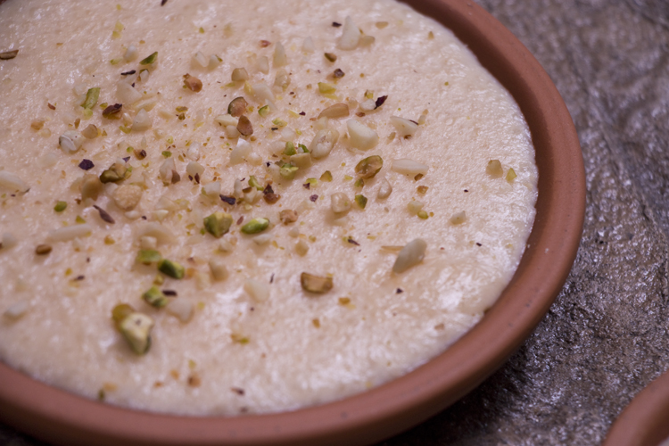

Kheer

Decription
Kheer is a popular Pakistani dessert. It is very similar to rice pudding, but a lot better.
It is usually made by boiling milk, sugar or jaggery, and rice. It can be additionally flavored
with dried fruits, nuts, cardamom and saffron.
Ingriedients
- 4 1/2 cup whole milk
- 1/4 cup uncooked rice
- 7 tbsp sugar
- 4-5 cardamom pods
- Crushed nuts (pistachio, cashews, blanched almonds) to garnish
- First, we are going to OVER cook the rice in boiling water for 10-12 minutes,
until they get really soft and mushy.
- Next, strain the rice and with the back of a fork, mash it well until it resembles oatmeal.
- Next, heat up milk in a stainless steel deep saucepan and let it come to a gentle simmer.
- Open the cardamom pods and add it to the milk. (Once Kheer is done, you can
take out the husk since we're only using 5 pods.)
- Next add the rice and sugar. The rice will be clumpy but as it cooks, it will break down.
- Now on very low heat, cook the Kheer for 3 hours. Make sure you stir every once
in a while. The milk will inevitably catch at the
bottom so make sure you use a stainless
steel pot because if you use a non stick saucepan, the brown bits will peel off as you
stir and
distribute throughout the Kheer. That would be gross!
- After 3 hours of slow cooking, the Kheer will have thickened. It should fall in little clumps
from the spatula
- Immediately pour in terracotta bowls and garnish with crushed nuts. The skin that forms
on the surface is the BEST part!
- Let Kheer cool in serving dish for 15-20 minutes before serving.
- You can keep this in the fridge covered for up to 3 days but who's even saving for later.